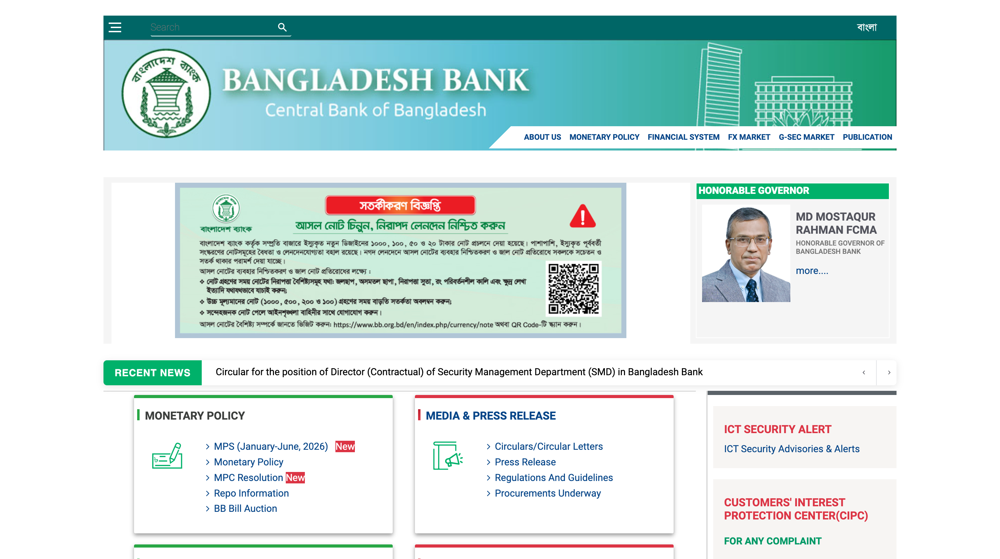
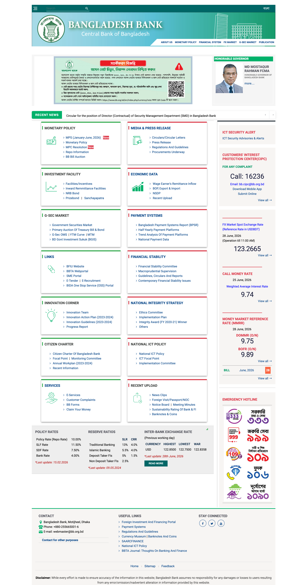
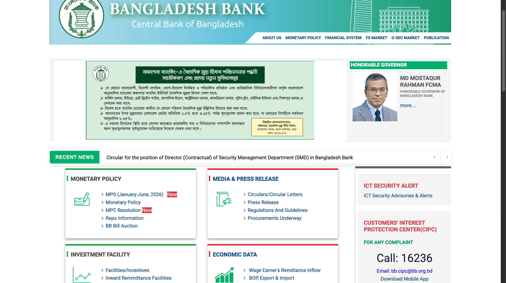
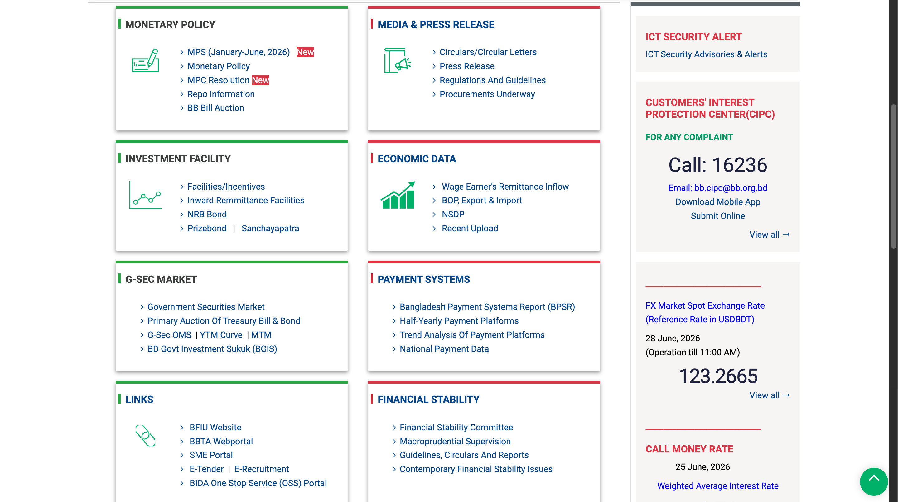
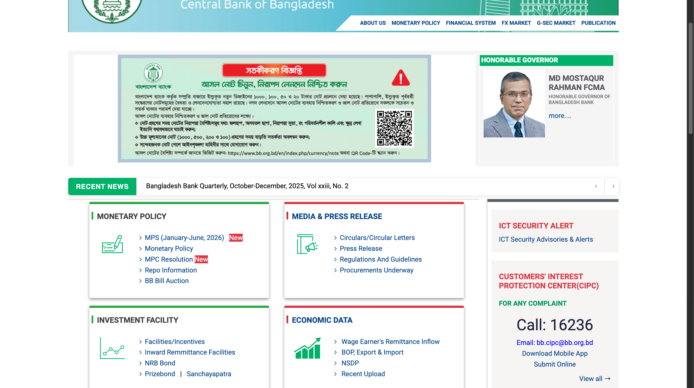
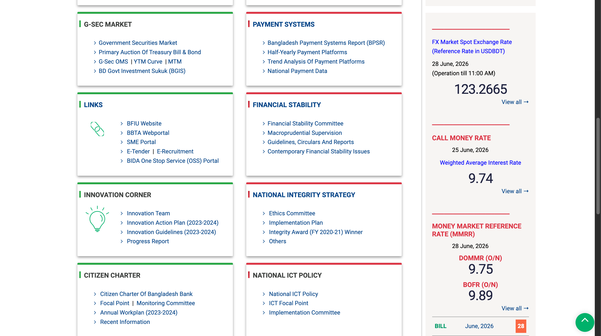
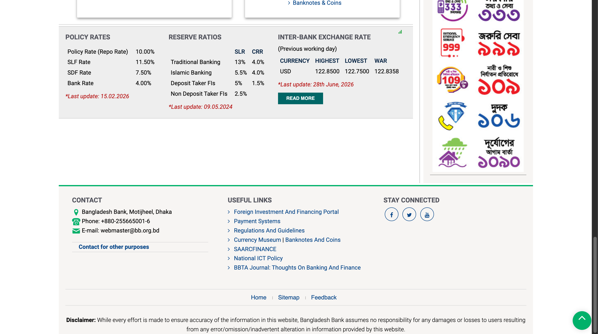
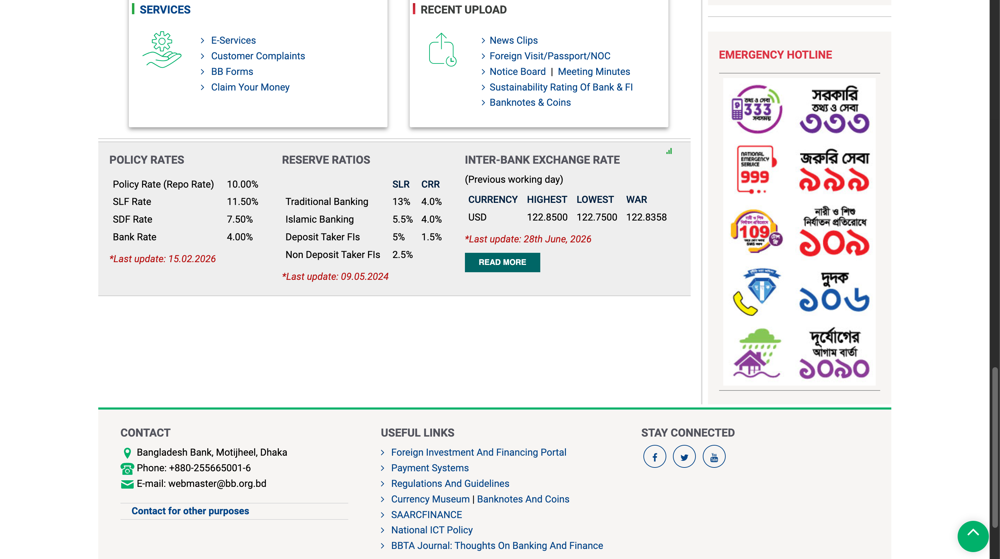
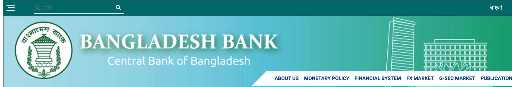

📄 Table of Contents
- 1. Executive Summary
- 2. Identified Issues (9 Found)
- 1. No Persistent Navigation Bar [HIGH]
- 2. Fixed Narrow Page Width [HIGH]
- 3. Auto-Rotating Banner — WCAG Failure [HIGH]
- 4. Inconsistent Card Border Colors [HIGH]
- 5. Governor Section Wasted Space [MEDIUM]
- 6. Card Icon/Border Misalignment [MEDIUM]
- 7. Inaccessible Social Media Icons [MEDIUM]
- 8. Hotline Numbers as Bitmap Images [HIGH]
- 9. Oversized Decorative Header [LOW]
- 3. Proposed Improvements (9 Actions)
📊 1. Executive Summary
The Bangladesh Bank website has undergone a visual refresh introducing a teal/green-gradient branding scheme, icon-based content cards, and a hamburger-menu navigation. While the refactoring shows intent to modernise the portal, the execution reveals significant UX debt that undermines the experience for all users — especially first-time visitors, those with disabilities, and mobile users.
The three most critical problems: (1) loss of persistent top navigation replaced by a hidden hamburger menu that buries the entire site structure; (2) a fixed narrow page width (~843px) that wastes ~40% of screen real estate on desktop; (3) inconsistent color semantics (red and green on identical card components) that creates false urgency and confuses visual hierarchy.
Content shows 15+ sections in a single vertical scroll with no grouping logic, extreme cognitive load. Missing: skip-navigation links, ARIA labels, auto-rotating banner pause control (WCAG failure), and emergency hotline numbers are non-tappable bitmap images.
Positives: Professional brand palette, comprehensive footer contact info, useful Recent News ticker, valuable Policy Rates and Exchange Rate widgets. The hamburger drawer itself is visually clean.
🔎 2. Identified Issues
On page load, only a hamburger icon, search field, and language toggle are visible. Zero persistent navigation links. All 10+ major sections are invisible until the user clicks the hamburger menu. No skip-to-content link, no breadcrumbs, no secondary navigation. On desktop, this is a severe discoverability failure — users cannot build a mental model of the site's information architecture.

Sticky horizontal navbar on desktop (768px+) with all 8 primary sections visible as dropdown nav items. Reserve hamburger for mobile only. Add skip-to-content link as first focusable element. Add role="navigation" ARIA landmark.
All content constrained to ~843px on a 1440px desktop. ~300px blank white margin on each side (~40% wasted). 15 content sections stacked in a single column requiring 8+ full-page scrolls. Fixed-width anti-pattern from the pre-2010 era.

Fluid responsive layout (max-width: 1400px). CSS Grid: 3-col desktop / 2-col tablet / 1-col mobile. Reduces scroll depth by ~60%. All 15 sections become scannable in ~3 viewport heights.
Hero carousel auto-advances through official government notices (fraud alerts, investment notices) with no pause/stop control and no slide indicator dots. Direct violation of WCAG 2.1 SC 2.2.2 (Pause, Stop, Hide) at Level AA. Complex Bangla-language government content cannot be read before cycling. Users with cognitive disabilities, attention disorders, or low vision are particularly impacted.

Add visible play/pause toggle (aria-label="Pause banner rotation"). Add dot indicators for manual navigation. Set minimum 8-second interval. Consider replacing with a static pinned notice board — government notices are better as scannable lists than timed slideshows.
Category cards alternate between red and green border accents with no discernible pattern. Red universally signals danger/error — applying it to neutral cards like "Media & Press Release" creates false urgency. Violates WCAG 1.4.1 (Use of Color as sole differentiator). Creates visual noise and undermines information hierarchy.

Standardize all category cards to a single accent: teal #006644 left-border only. Reserve red exclusively for actual alerts, warnings, error states. If grouping desired, use background shading or section labels — not border color variation on identical components.
Full-width ~200px homepage section but right ~65% is entirely blank. Contains only portrait, name, title, and a vague "more...." link. "more...." provides zero context for screen readers. Prime homepage real estate severely underutilized. No welcome message, no institutional statement, no descriptive CTA.

Add 2-3 sentence institutional statement. Replace "more...." with: <a href="..." aria-label="Read Governor's Message">Read Governor's Message →</a>. Use empty space for a key indicators widget (policy rate, exchange rate, latest press release).
Icons are top-vertically-aligned (align-items: flex-start) while link lists extend 4-5 items below, creating visual disconnection. Some cards: red top-border + left pipe; others: only green left-border. Different chevron characters across sections. No unified Card component applied consistently — accumulated design inconsistencies.

CSS Flexbox align-items: center on card container. Standardize: one border style (teal left, 4px), one consistent chevron, max 5 links + "View all" overflow. Create a single Card design token/component definition applied to all 15 blocks.
Three icon-only social buttons have NO aria-labels — screen reader announces "link, link, link" with zero context. LinkedIn absent from a professional financial regulatory body. Twitter may show outdated bird logo. Circular border treatment clashes with flat design language used elsewhere on the page.

Add aria-label to every social icon. Add LinkedIn as fourth social channel. Consider visible text labels beneath icons (icon+label outperforms icon-only). Update to X/Twitter logo if applicable. Remove circular borders to align with flat design.
Emergency numbers (333, 999, 109, 106, 1090) are static bitmap images. Mobile users cannot tap to call. Screen readers cannot announce them. Search engines cannot index them. Pixelate on Retina displays. Do not scale with text-zoom accessibility settings. Emergency information with the worst possible accessibility implementation — legally and ethically problematic for a public government service.

Replace with HTML: <a href="tel:999" aria-label="National Emergency 999">999</a>. SVG icons for service logos. Bangla text via Unicode web font (Noto Sans Bengali). role="region" aria-label="Emergency Hotlines" on container. Bilingual EN/BN labels for each service.
150px-tall hero header contains only logo and decorative building illustration. No CTA, no embedded search, no quick-links. Meanwhile the functional nav bar is only ~35px. Search placeholder "Search" has ~2.8:1 contrast on dark teal background (WCAG AA requires 4.5:1 minimum for normal text — SC 1.4.3). 150px of above-fold real estate wasted on decoration.

Reduce header height to ~90px. Embed: prominent search bar (white, high-contrast), 4 quick-access CTAs (Exchange Rates / E-Services / File Complaint / Latest Circulars). Fix search placeholder contrast to white (#fff) on dark teal. Move language toggle into header.
💡 3. Proposed Improvements
Persistent Horizontal Navigation
Sticky navbar for desktop (768px+) with all 8 primary sections visible as dropdown nav items. Skip-to-content link as first focusable element. ARIA landmarks. Reserve hamburger exclusively for mobile. Highest single-impact improvement possible.
Fluid Responsive Grid Layout
Abandon fixed 843px container. CSS Grid: 3-col desktop / 2-col tablet / 1-col mobile. max-width: 1400px. Reduces scroll depth from 8+ screens to ~3. Makes all 15 sections scannable. Zero content lost.
WCAG 2.1 Level AA Compliance
(1) Pause/stop control for rotating banner. (2) aria-labels on all icon-only links. (3) HTML tel: links for hotline numbers. (4) Fix search placeholder contrast to white. (5) All touch targets ≥44x44px. (6) Add skip-nav link.
Semantic Color Token System
--color-brand: #006644 (all category card borders and interactive elements). --color-alert: #e74c3c (warnings ONLY). --color-heading: #003366. --color-success: #27ae60. Apply strictly — color must carry consistent semantic meaning site-wide.
Header with Real Interactive Value
Shrink decorative banner to ~90px. Add: prominent search bar, 4 quick-access CTAs (Exchange Rates / E-Services / File Complaint / Circulars), language toggle. Expand Governor section with message excerpt and descriptive CTA link button.
Hotline Section Rebuilt as HTML
Every number: <a href="tel:XXX" aria-label="Service Name: XXX">. SVG icons. Noto Sans Bengali font for Bangla text. Bilingual labels. role="region" aria-label="Emergency Hotlines". Enables tap-to-call, screen reader access, and search indexing simultaneously.
Enhanced Recent News Ticker
Expand to 4-item card list with: date stamp, category badge (Policy/Alert/Publication), headline truncated at 2 lines. Prev/next buttons ≥44px touch targets. "View All News" CTA button. Full keyboard support for carousel navigation.
Unified Card Component Standard
One Card definition: teal left-border (4px, #006644), icon centered (align-items: center), consistent chevron (>), max 5 links + "View all". Applied to all 15 category blocks. Eliminates the accumulated inconsistencies found across the page.
Site Architecture Discovery Page
With hidden nav and 15+ sections, users lack site mental model. Build "Explore BB.org.bd": visual grid of all sections with 1-line descriptions and direct links. Link from footer, hamburger menu header, and search results. Significantly improves information scent.